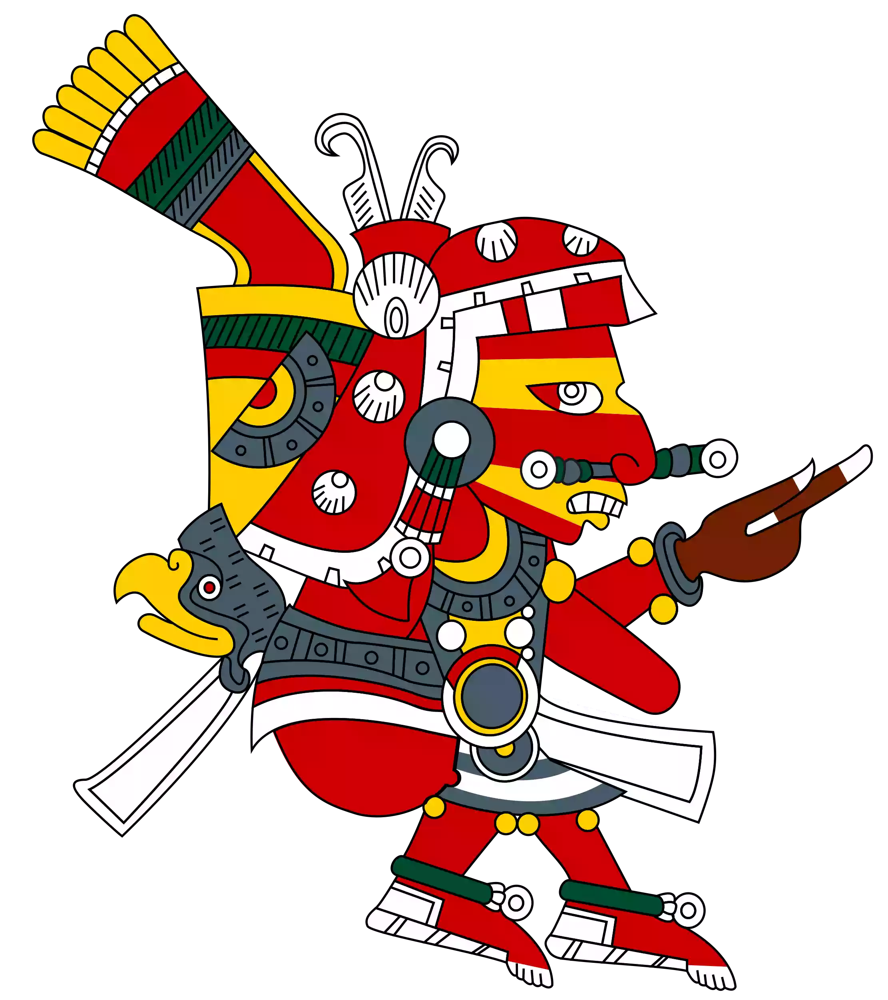
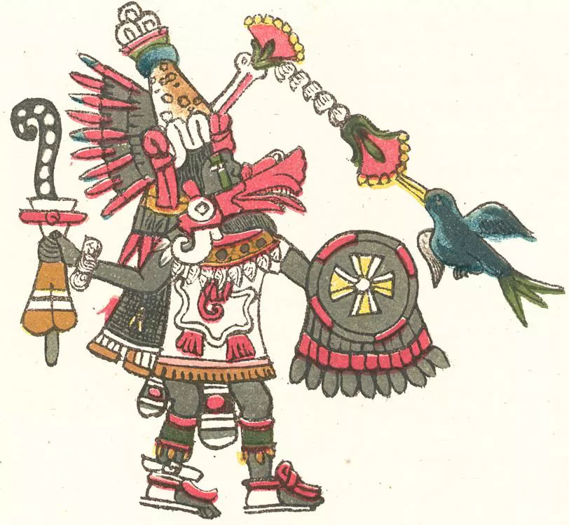
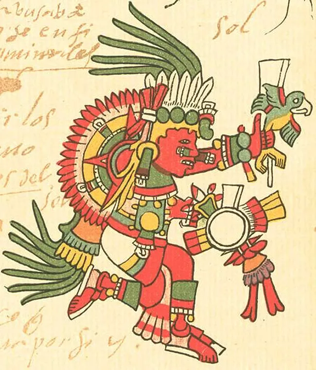
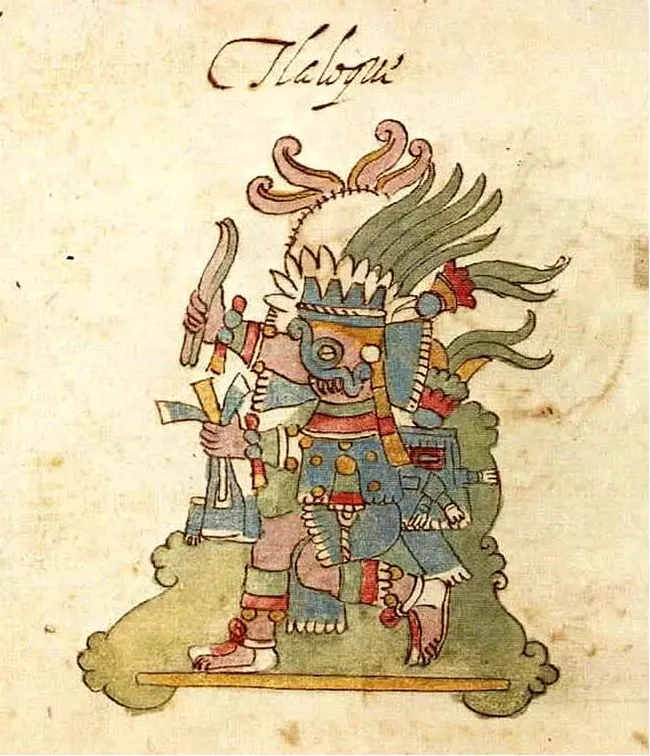

| Deity | Something About Them | Image |
|---|---|---|
| Xipe Totec | Lord with the flayed skin. Xipe Totec was the god of agricultural fertility, the east and the goldsmiths. He is usually portrayed wearing a flayed human skin representing the death of the old and the growth of the new vegetation. |  |
| Quetzalcoatl | The Feathered Serpent. is probably the most famous Aztec deity and is known in many other Mesoamerican cultures such as Teotihuacan and the Maya. He represented the positive counterpart of Tezcatlipoca. He was the patron of knowledge and learning and also a creative god. |  |
| Tonatiuh | Aztec sun god. He was a nourishing god who provided warmth and fertility to the people. In order to do so, he needed sacrificial blood. Tonatiuh was also the patron of warriors. In Aztec mythology, Tonatiuh governed the era under which the Aztec believed to live, the era of the Fifth Sun. |  |
| Tlaloc | The rain god, is one of the most ancient deities in all Mesoamerica. Associated with fertility and agriculture, his origins can be traced back to Teotihuacan, the Olmec and the Maya civilizations. Tlaloc's main shrine was the second shrine after Huitzilopochtli's, located on top of the Templo Mayor, the Great Temple of Tenochtitlan. His shrine was decorated with blue bands representing rain and water. The Aztec believed that the cries and tears of newborn children were sacred to the god, and, therefore, many ceremonies for Tlaloc involved the sacrifice of children. |  |